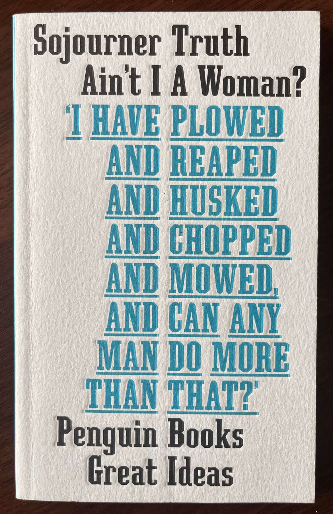
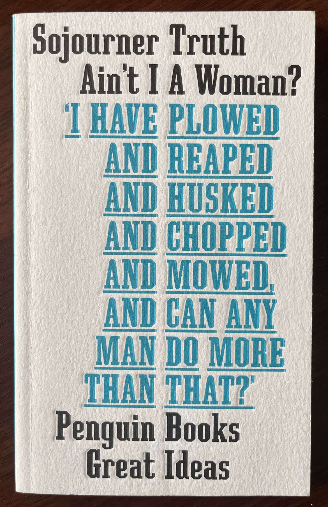
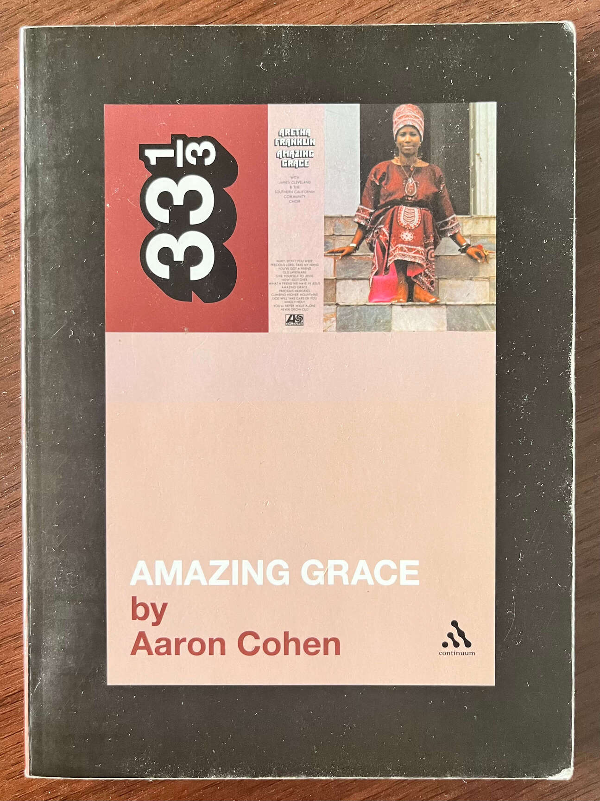
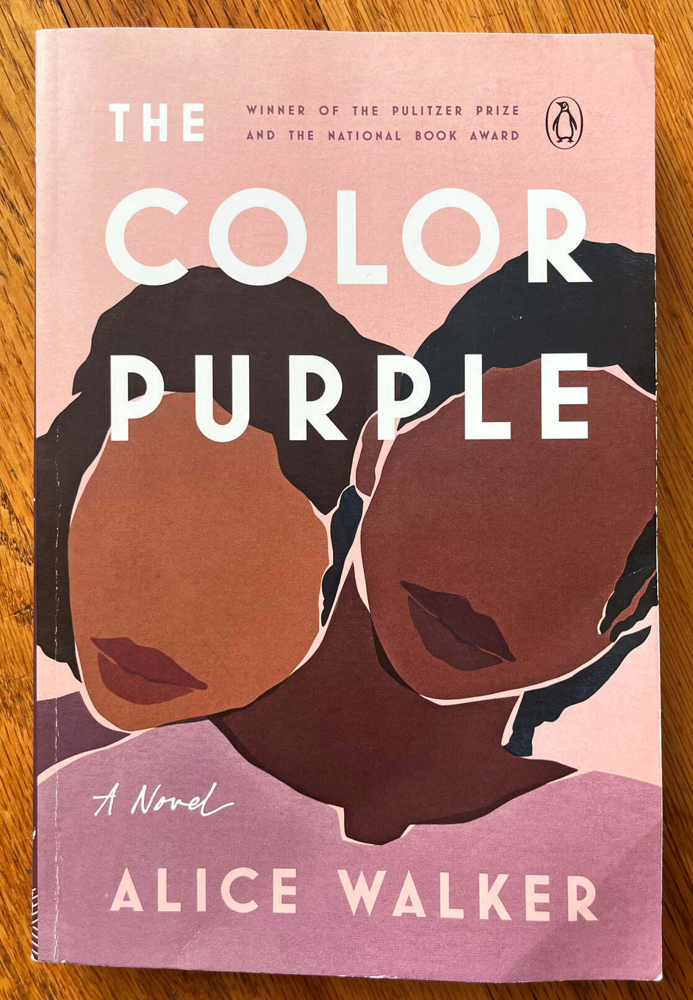
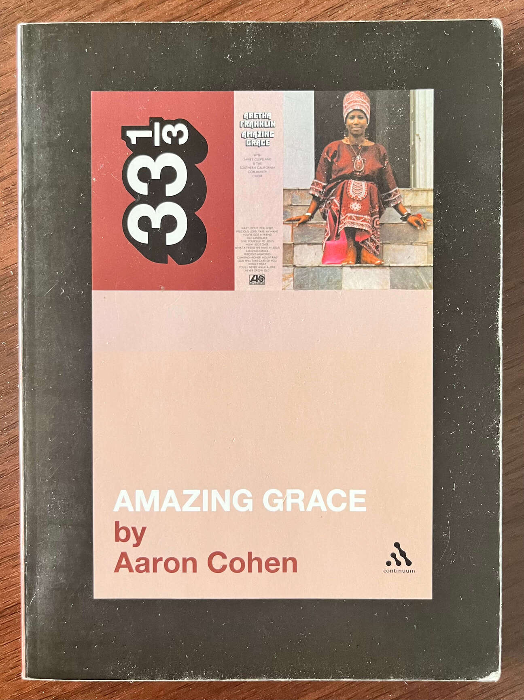
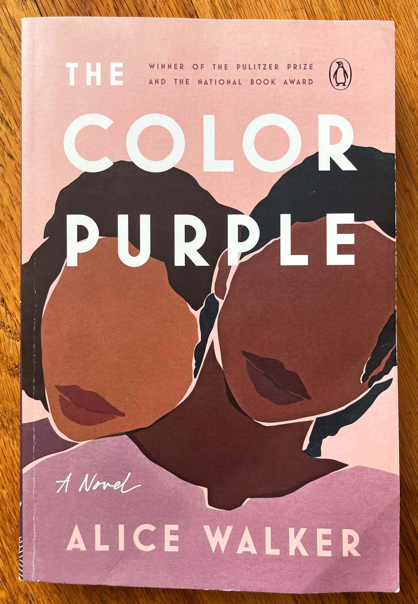

books. for most of my life the practice of reading has felt far out of reach. that changed in early 2021. in those months i began to accept that although i may never feel as though i consumed a book particularly well, reading can be an important part of my life. allowing that truth exist, i committed to strategies to set myself up for success in my efforts to read.
some of these books i may only hope to read again, but each has made indellible marks on my being, and they sit here as a reminder to me of that influence.


 

 



the first strategy i take is to read authentically. allowing myself to experience the work in whatever way i am capable of in a moment. don't succumb to pressure to finish a book, make progress, or to "be reading." remember you can always read a book again. focus more on being present than fully grasping. second, i try to read things that challenge my status quo. things that don't expand my mind as much as they work against it. that renewal is a practice that breaks down my need for a defense and allows me to be more present with and be affected by the work of another.